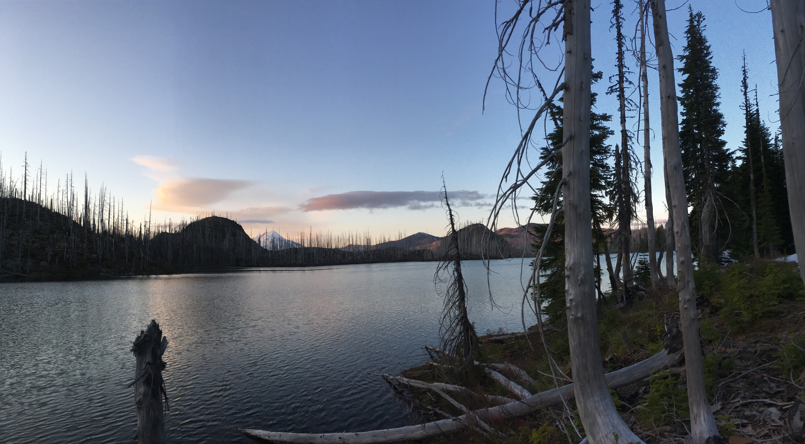
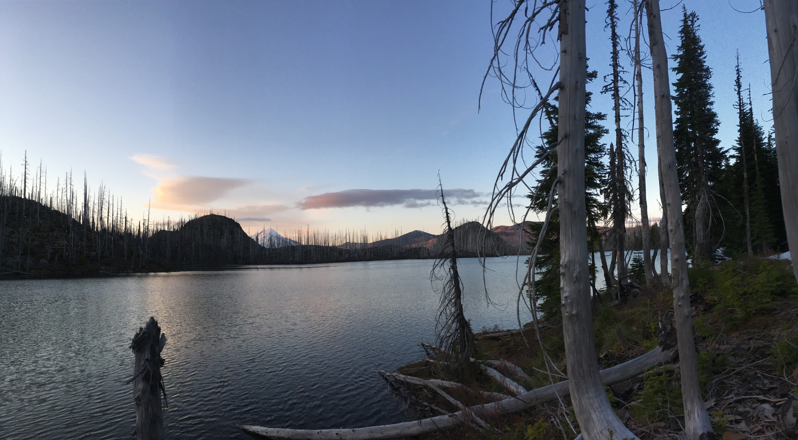
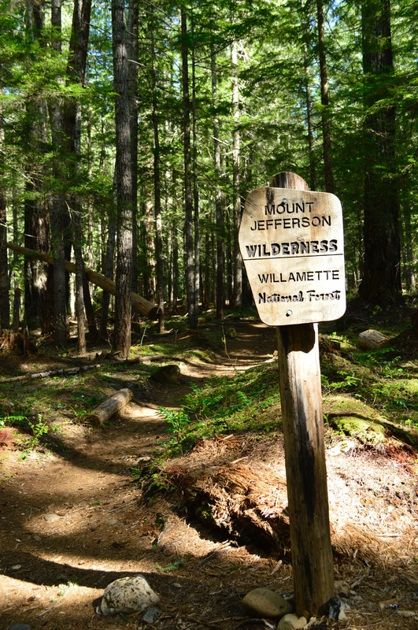
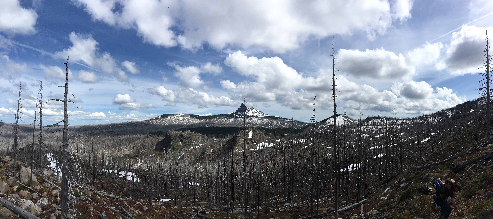
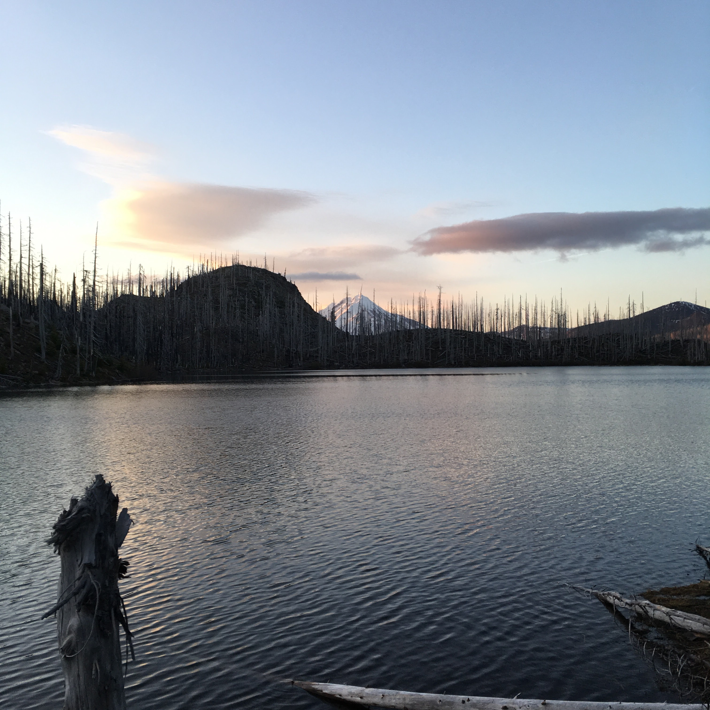
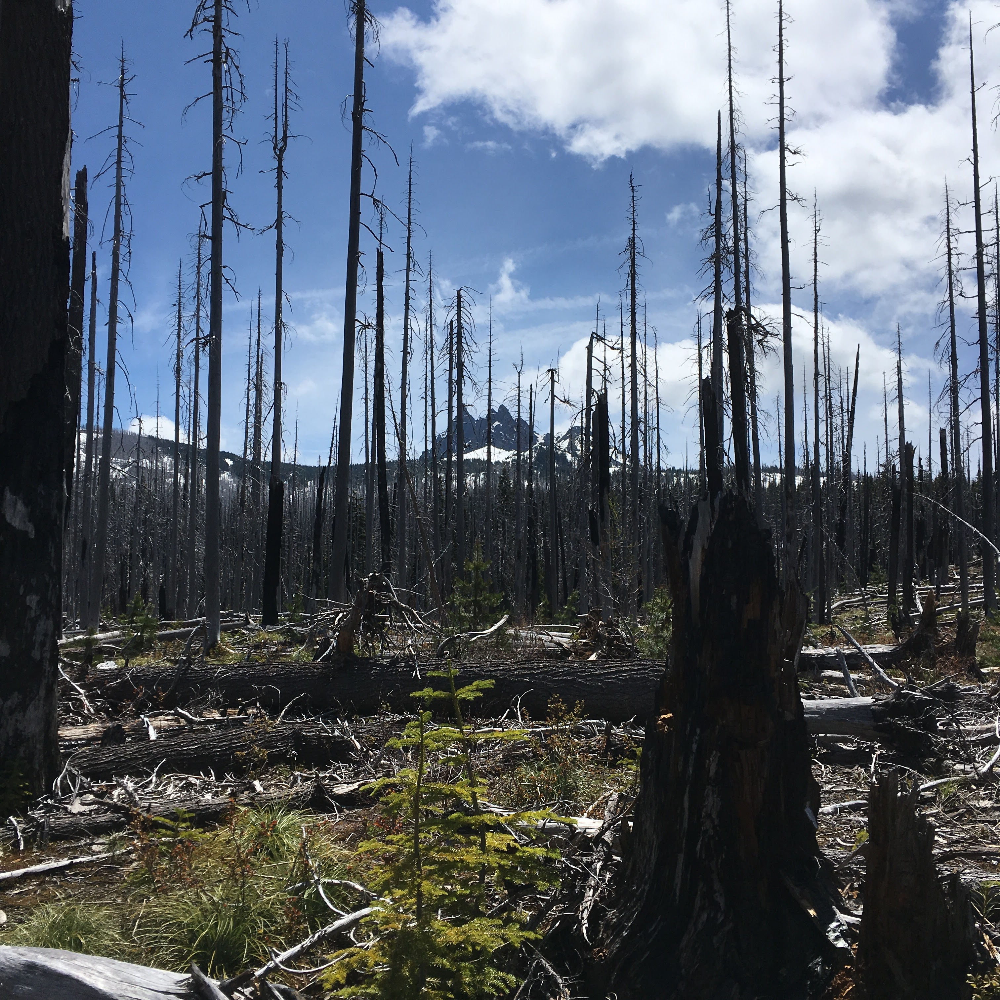
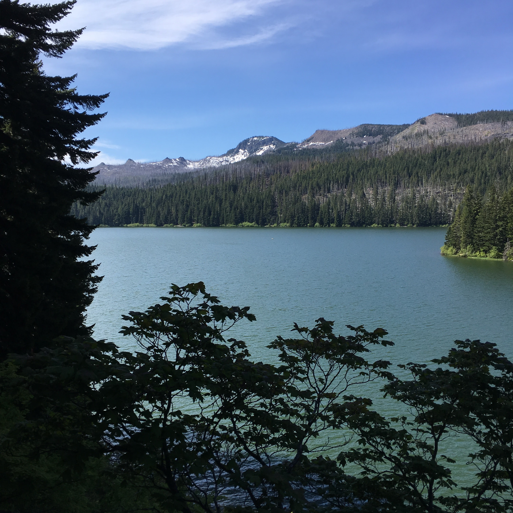

Hike to Jorn Lake
The hike to Jorn lake was the first venture we took deep into the Jefferson Wilderness. It was a three day trip around the Marion Lake sub-basin. The overall round trip length was about 14.5 miles, and the hike to Jorn lake was about 7 miles. We started at the Marion Lake trailhead (trail 3436) which provides access to the Jefferson Wilderness, and all its subsequent trails. The route of trails we used are as follows (3436,3495,3422,3492,3437,3436).
 

The Start
This trailhead has a five dollar a day parking fee and wilderness regulations with wilderness self issue permit. The start of the hike is through a cool section of old growth with Douglas- Fir, Western Hemlock, Western Red Cedar and Pacific fir forest which seems to continue on up to Marion Lake. The first mile rises gently to the first switch back which levels back out at Lake Ann. There is a rocky section of the trail where Lake Ann drains out of which may give old hikers a little trouble. Since, this trail is the closest access to Marion Lake you can expect to see more hikers and even some hikers that pack boats.
First Look at Marion Lake
Marion lake is the largest lake in the immediate area and is the end location for many hikers. From this point the trail slowly departs from the contour of Marion Lake and begins to ascend to the eight lakes basin in which there are several switchbacks. About half a mile passed the Pine Ridge Trail (3443) Fork the trail to Jorn Lake begins to enter the post forest fire region.

2.3 miles into the hike gives a first look at Marion lake.
A look a Three Fingered Jack
This point is about 5 miles in on the way to Jorn Lake. The image really puts into perspective the vast devastating power of forest fires.
Jorn Lake
Looking at Mt.Jefferson
Another Look Back at Jack
...
A last look at Marion
...